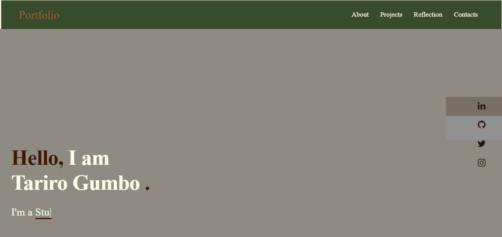
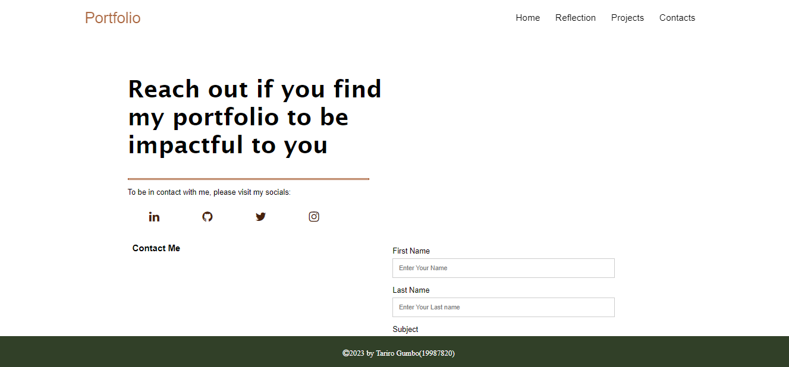

Hello, I am Tariro Gumbo .
I'm a Student.
About Me
Hello I'm Tariro, a student at Curtin with a diverse range of skills in art, design, business and technology. I am quite interested in merging my artistic vision with aspects of business and technology in any way I can. I have experince with business analysis, data visualisation and project management. My technical skills and critical and strategic thinking enable me to think outside the box and create innovative solutions that will meet the demands and needs of a situation and or individuals. Thank you for visiting my portfolio and I am looking forward to having an opportunity for collaboration with you.
Skills
I have skills from different IT fields that I have been practising and am currently learning to improve my work efficiency. The technical skills that I have developed while working in IT. Some of the other skills were developed due to my interests such as Canva and CorelDraw.
Power BI
79%
Project Management
85%
Database
75%
Python
69%
CorelDraw
81%
Canva
84%
Work experience
This section contains information of my cv and my most recent work experience. The work experience in this section is from the past year mid 2022 to early 2023.
Summary
Tariro Gumbo
I am knowledgable and detail-oriented, with good well-developed communication skills and the ability to perform well in a team setting.I am constantly looking for ways to be more creative and show my creativity in the work I do.
- Alexander Rd, Highlands
- (230)5973-0854
- 19987820@student.curtin.edu.au
Education
GCSE Ordinary Level
2016-2017Watershed College, Zimbabwe
Advanced Level
2018-2019Watershed College, Zimbabwe
BCOMM: Business Information Systems and Technology
2021-CurrentCurtin Mauritius
Professional Experience
Business Analyst Intern
December 2022- February 2023Brainnest, Mauritius
- Delivered assistance and helped with inventory count and generated weekly inventry reports.
- Interacted well with clients regarding business requirements and provided customer support when necessary as well as supporting staff.
- Tasked with evaluating the importance and consistency of various business intelligence data against the company's need for optimal course action.
Data Analyst Intern
May 2022- July 2022Sightness, Mauritius
- Identified trends and generated insights by conducting analysis on various data systems.
- Tasked with drafting yearly and quarterly company metrics to gain a view on the success and losses of the company in a given period
- Developed reports in repsonse to data analysis requests from management and assisted senior analysts with research, data visualisation and reporting.
Projects Gallery
This section contains the projects that have been worked on in-class that have been completed.


Creating The Portfolio
The creation of the portfolio consisted of evaluating potential
portfolio designs, the best-suited one for the portfolio. Overall, the
creation of the portfolio was rather interesting as most of the
concepts used to make the website was from the content taught in the
lectures. The lecture content is mainly what dominates the portfolio.
Other aspects of the portfolio such as the animations have been
referenced and their application to the portfolio was to make it more
aesthetically pleasing.
While it was important to make the page pleasing to view,
functionality was also an important aspect to consider. This would be
involving the screen size and whether it would be still be easily
usable on a mobile phone or tablet. Is the font legible, if the images
are not quite clear is there any alt text for people to see what it
was supposed to be? All these where considered when making the
portfolio.
Home
This is a introduction to what both portfolio and I as a person have
to offer. The intention of the typing animation was to give a good
impression and brief introduction. To keep it short and precise.
The layout of this page went through more change compared to the other
pages, the initial design and the thought process of the home page was
to have a very simple and plain introducion into the webpage. A
screenshot of how it initially was supposed to look below this
paragraph verse how it finally looked after some deliberation.
- 
About
This would be a proper introduction to who Tariro Gumbo is. This page
may be shown more about how much I have learnt from this unit. My
application concepts learnt were applied in the About Section more
compared to the other four sections. The references for the content,
that some information was taken from and aplied to the this section
are placed at the end of the document after the html losing tag.
In the work experince section the use of lists and span tags dominated
the section and understanding how to style a webpage has been
informative.More time went into the style sheet than it did on the
javascript which was used to create the menu toggle for use on
different devices and screen sizes.
Projects
The projects page or Projects Gallery as i have so renamed it on my
portfolio is purely for the inclass exercises that we worked on. The
format has not really changed here. The styling has mostly changed for
the footer, header and navigation bar. The color theme as well.
An interesting discovery i made with this page would be inserting the
images for the individual projects. The size proportion for each image
to still be properly viewed on different devices without disorting
their ratio was intriguing. Insightful.
Contacts
The initial intention of the contacts is create a page in which has my
contact details and my social media sites such as linked in, a link to
my github, instagram and twitter. Hence the layout and the phrase"
Reach out if my portfolio was impactful"
Of Course after going through the assignent outline, i realised a form
would be a necessary addition to the page hence the current order. I
was able to maintain the original order and was able to add a form to
beside content on how to reach me. Having placed the form it made no
sense to leave my email and telephone at the bottom as it shows in the
below pictures.
- 
Challenges
The challenges that I faced were mostly due to the styling of the portfolio. The chllenges were solved eventually although thre might be some parts I have missed or did not take notice to. However the most challenging would have been the screen sizing for different devices. Making generic sizings might not help in some cases since the dimensions differ with each phone and chances are the dimensions I used for a tablet, phone or a browser would differ on the device.
- Javascript Typing Animation: it was a matter of the typing animation, which I later got the hang of and fixed the code in the js file, otherwise that would currently not be on the home page. In the initial design the home page had my social media icons until the typing animation appeared to be in conflict with the background picture.
- Contact Page: There was problem I encountered in the begining since I was reluctant to put a form on the page but wanted to maintain it as it was.
- Navbar: The navbar was intially horizontal at the top of the page which is very different from how it is now. It was different on each of the pages On some pages it was sticky while on other pages it was fixed. At the time it seemed like a design flaw. Therefore I made the navigation bar and the footer into a vertical navigation bar.
Contacts
If you are interested in contacting my contact information has been linked in the navigation bar or you can leave a message in the form below. The other ways to reach would be through email or by telephone which i have also included below.
Email:
19987820@student.curtin.edu.au
Call:
+230-5973-0854